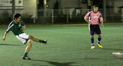

|
Hachioji Park, Saturday 4th September
And so it was that the newly sponsored Panache Panthers made their Divison 1 debut and there was certainly no better way to hit the ground running or rather panting, than the challenge of facing last season's Div 1 champs the mighty Hibs. Confusing sat navs and vomiting centre-backs combined to ensure that 10 of the Panthers arrived with 10 minutes to kick off. No complaints from the 2 Panthers who had arrived on time Frank and Sho who had made sure to intimidate the opposition upon arrival by bring some Division 1 quality girlfriends with them.
An intense 1 minute warm up, Churchillian pre-match speech by Romen and we were lining up and kicking off.
The opening exchanges were quite cagey with the Panthers focusing on keeping it tight at the back and dropping back as a unit. Hibs were enjoying good possession without really troubling new keeper Brad in goal. Special Kei was winning a few early balls which he continued to do all night in a MoM performance but just as the Panthers had started to grow in confidence and edge forward a little they were caught out mid way through the first half. A decent floated through ball which could have been dealt with better by the pink defence landed on the shoulder/chest of Tomo and in a skillful or some might say fortunate spin, he freed up the space for a shot at goal. There was nothing fortunate about the finish though as he rifled it high and into the corner to the keepers right. One nil Hibs, and on possession deservedly so. Never too deterred at conceding, the pinks had to react and finished the half the stronger keeping the ball better and forcing a number of corners and free kicks in green territory with James S. earning a yellow for a spectacular trip on the Panthers Captain. The half finished with Hibs One nil up.
The Panthers had held their own pretty well after a cautious start and started the 2nd half with more confidence. Frank stung the palms of Hitoshi in goal with a rasper which landed in Kenji’s path but he could only half connect with his volley and it trickled into Hitoshi’s hands. Almost immediately Kenji then found himself through on goal after a neat interchange between Pete and Ben had squeezed him in, but the keeper made himself big and saved well. Chances are always going to be at a premium at this level and so it proved as Hibs broke away and scored a second. Nice play on the right by Dan but the Pinks should have dealt with his cross better, with the Hibs striker left free at the far post to slot home. Classic suckerpunch, what might have been 1-1 had quickly flipped to 2-0. Buouyed by their 2 goal cushion the Hibs again started to dominate possession again and forcing a few corners. Matt and Phil at the back were holding things together nicely at the back. The Panthers switched to 2 up front and another debutant Edwin was working hard to create chances. Mark Ralph who had a great second half was "enjoying" his duel with Dave at the back for Hibs. The Panthers had calls for a penalty turned down after a tussel between Dave and Mark. who then flased a cross come shot across the goal. The pinks wanted to something to show for their efforts and continued to push forward with Frank getting his once-a-match-rabona and bombing on from right back with Sho tirelessly running the channels. With 5 minutes to go, the Panthers got their reward when Sho fired home after Hitoshi palmed out a shot from the powerful Edwin. The last few minutes were pretty hectic with the Panthers pushing forward for the equalizer. Hibs are an experienced and well-organized team who were able to hold out in the end but the knew they had been in a game. First match of the season for both teams who will both improve as the season develops. The Panthers left Hachioji Park disappointed not to have snatched a draw, but not so disappointed by their first Div 1 performance.
Report by Ben Cordier
|